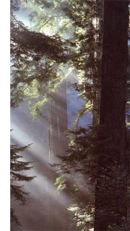

©BRECK P. KENT/EARTH SCENES
"Think of the three deadly
C
's cars, cattle and chain saws. If everybody uses them in sensible moderation, it will enormously relieve the pressures on the atmosphere and on the rain forests."